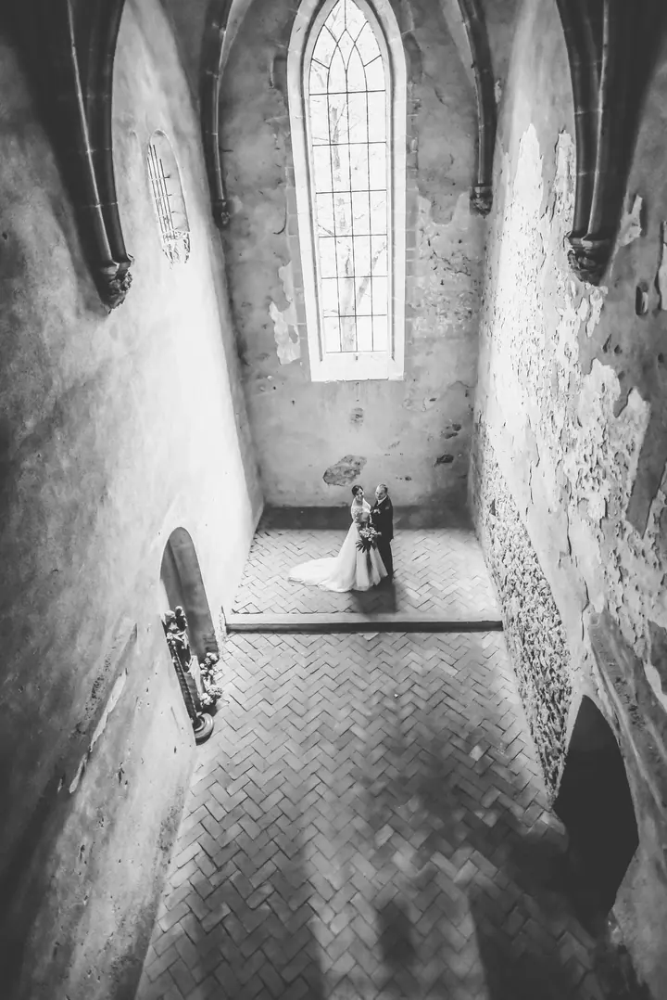
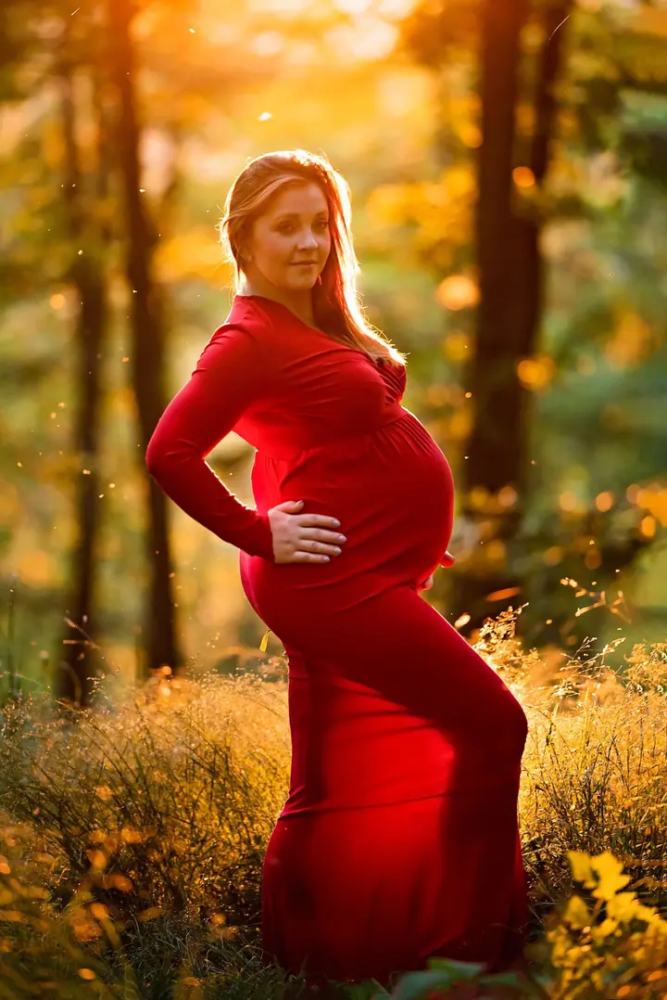
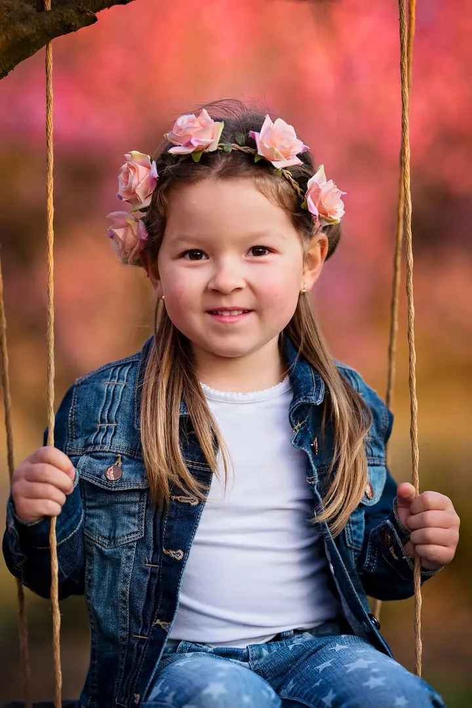
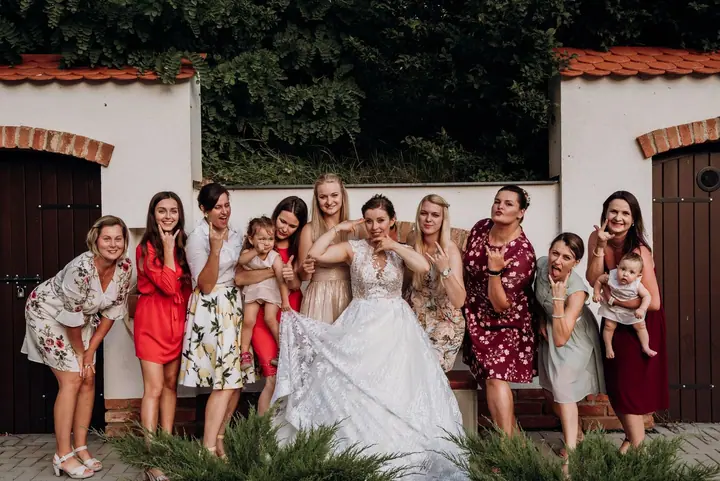

jedna
Svatební focení
Fotím svatby na jihu Moravy, ceny začínají na 10 000 Kč a podrobný ceník vám ráda pošlu. Když si u mě objednáte celodenní svatbu, máte k ní zdarma rande focení při západu slunce.

Svatební a rodinná fotografka · Dolní Kounice, Brno-venkov, Brno

Jmenuji se Iveta Schořová a fotím svatby, maminky v očekávání i rodiny s dětmi na jihu Moravy. Malý útulný ateliér mám v Dolních Kounicích, jen 20 km jižně od Brna, a ráda vyrážím fotit i ven do přírody.
Více o mně
Co fotím
jedna
Fotím svatby na jihu Moravy, ceny začínají na 10 000 Kč a podrobný ceník vám ráda pošlu. Když si u mě objednáte celodenní svatbu, máte k ní zdarma rande focení při západu slunce.
dvě
Rodinné focení trvá zhruba 40 až 90 minut a v balíčku je 10 upravených fotografií za 2 500 Kč. Pro miminka i starší děti mám spoustu rekvizit.
tři
Focení maminek v očekávání venku v přírodě nebo v ateliéru. Šaty si můžete vybrat u mě v mnoha barvách a střizích a jejich zapůjčení máte v ceně.
Stylizované fotky miminek do 14 dnů věku. Miminko zavinu do wrapů, které ho uklidňují, a focení trvá zhruba 1,5 až 3 hodiny.
Rande focení vždycky při západu slunce

Za objektivem
Před mnoha lety bylo mým velkým koníčkem fotit vše kolem sebe, nejraději své známé a kamarády. Po čase jsem si pořídila lepší vybavení a rozhodla se, že se focením budu živit.
Dnes fotím hlavně na Brně-venkově: v Dolních Kounicích, Ivančicích, Pohořelicích a Ořechově, ale také v Nebovidech, Moravanech a v Brně. Pořád se vzdělávám, jak ve focení, tak v úpravě fotografií.
Pro miminka i starší děti mám k zapůjčení spoustu rekvizit a těhotné maminky si u mě vyberou šaty v mnoha barvách a střizích. Pokud vás moje tvorba zaujala, budu moc ráda, když se mi ozvete. Těším se na setkání s vámi.
Iveta
Vyplňte formulář, vyberte druh focení a napište, jestli chcete cenovou nabídku, termín nebo konzultaci. Ozvu se vám co nejdříve.
Domluvíme se, jestli budeme fotit v ateliéru, nebo venku. Když budete chtít, připravím vám šaty a rekvizity.
Fotíme v klidu a bez spěchu. Rodinné focení trvá zhruba 40 až 90 minut, u newborn focení počítejte s 1,5 až 3 hodinami.
U všech fotografií upravím barvy, kontrast, sytost a ořez, u těhotenských a newborn fotek i pleť. Hotové fotky dostanete v elektronické podobě.
Portfolio
Otázky
Ceny svateb začínají na 10 000 Kč, podrobný ceník vám pošlu, když mi napíšete. K celodenní svatbě máte rande focení při západu slunce zdarma.
Stylizované focení dělám do 14 dnů od narození miminka. U starších miminek doporučuji lifestyle focení, které stojí 3 000 Kč za 10 fotografií.
Nemusíte. Šaty si můžete vybrat u mě podle svých představ a jejich zapůjčení máte v ceně focení.
Neupravené fotografie nedávám. Každou fotku sama upravím a náročnější retuš je možná po domluvě za příplatek.